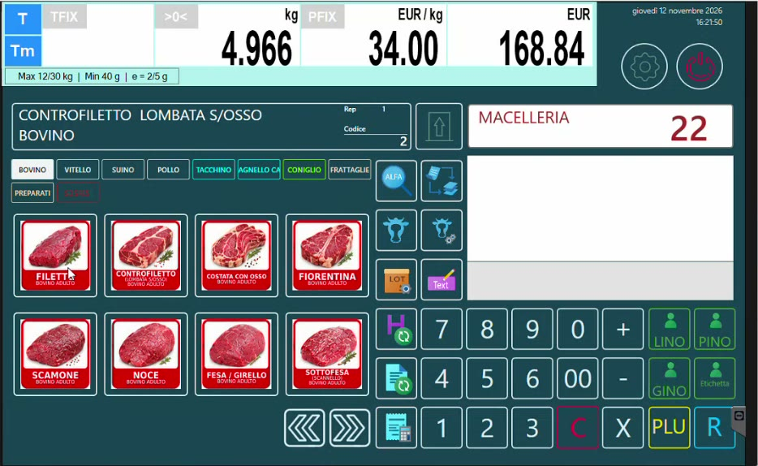

Tracciabilità, lotti e trasformazioni con Hyperetail e bilancia Icona
Scopri la soluzione software Hyperetail sul sito istituzionale Custom: custom.biz - Hyperetail.
Questa guida segue una macelleria dall'arrivo della mezzena fino alla vendita al banco: il lotto tracciabile viene caricato una sola volta in HyperStore, arriva da solo sulla bilancia Icona e resta ricostruibile anche dopo le lavorazioni (macinato, polpette, polpettone).

La schermata di vendita della bilancia Icona del banco macelleria.
Che cosa saprai fare al termine
- Spiegare a un macellaio la differenza tra tracciabilità e lotto di produzione.
- Configurare in HyperStore banchi, bilance e definizioni tracciabili.
- Caricare una mezzena con il suo lotto e venderne i tagli dalla bilancia Icona con lo scarico del peso del lotto.
- Creare modelli di trasformazione (ricette), eseguire una trasformazione e assegnare il lotto di produzione.
- Risalire dal prodotto finito ai lotti di ogni ingrediente.
- Presentare le novità della bilancia Icona: etichette parlanti, conti sospesi, promozioni a soglia di peso.
Tracciabilità e lotto di produzione: non confonderli
Vengono chiamati allo stesso modo ("lotti"), ma seguono dinamiche diverse. La tracciabilità riguarda i dati di origine che accompagnano la carne acquistata; il lotto di produzione identifica ciò che il negozio lavora in proprio. Vedi Concetti e obblighi.
L'ecosistema in gioco
| Componente | Ruolo nel flusso |
|---|---|
| HyperStore | Back office: definizioni tracciabili, articoli, carichi, modelli di trasformazione, trasformazioni, rintracciabilità. È il cuore di questa guida. |
| LiveRetail | Modulo necessario per collegare HyperStore alle bilance. |
| Bilancia Icona | Vendita al banco con scelta del lotto e controllo del peso, etichettatura, conti sospesi, promozioni. Riceve i dati da HyperStore in tempo reale. |
| DeLine e DeLine Ticket | Totem per il numero e per la consultazione dei dati tracciabili, monitor eliminacode con più code. |
| Hyperetail | Cassa: legge il QR code dello scontrino della bilancia e può chiamare a sua volta le code. Qui è solo l'ultimo anello. |
Struttura del portale
Tracciabilità delle carni
| Pagina | Contenuto |
|---|---|
| Concetti e obblighi | Mezzena, dati di origine, obbligo di informare il consumatore |
| Normativa europea e italiana | Regolamenti CE, decreti italiani, indicazioni obbligatorie in etichetta, controlli |
| Banchi e bilance in HyperStore | Gruppi Bilance - Banchi e anagrafica Bilance |
| Definizioni tracciabili | Estese, ridotte e precompilate; bovino, avicolo, suino |
| Articoli: mezzena, tagli e macinato | Come impostare i tre tipi di articolo |
| Carico della mezzena e del lotto | Bolla o fattura, peso, lotto, dati tracciabili |
| Vendita al banco con il lotto | Scelta del lotto su Icona e scarico del peso |
Lotti di produzione e trasformazioni
| Pagina | Contenuto |
|---|---|
| Dalla mezzena al macinato | La prima trasformazione e il lotto di produzione |
| Prodotto finito e ingredienti | Fornitori, prodotto finito (polpettone), ingredienti |
| Carico degli ingredienti da CSV | Import con tracciato, lotti e scadenze del fornitore |
| Modelli di trasformazione | La ricetta e il costo di produzione |
| Eseguire una trasformazione | Quantità, lotti di origine, lotto e scadenza del prodotto |
| Rintracciabilità dei lotti | Lista trasformazioni e mastrino del prodotto |
Novità bilancia Icona
| Pagina | Contenuto |
|---|---|
| Etichette parlanti e immagini | Etichettatura al volo, QR code, immagini e formato etichetta |
| Lotti tracciabili dalla bilancia | Gestire il lotto in autonomia, senza gestionale |
| Conti sospesi e comande | Conti parcheggiati, più operatori, stampa della comanda |
| Promozioni a soglia di peso | Taglio prezzo e sconto percentuale per fasce di peso |
DeLine e cassa
| Pagina | Contenuto |
|---|---|
| Totem, code e cassa | Totem informativo, monitor eliminacode, chiamata dalla cassa |
Prerequisiti
- HyperStore con il modulo LiveRetail attivo.
- Una bilancia Icona in rete: al momento la tracciabilità gestita da HyperStore è compatibile solo con Icona.
- Bilancia già configurata (banchi, articoli, tastiera).
Documenti scaricabili
- Circolare sui controlli dell'etichettatura delle carni bovine (PDF), riassunta nella pagina Normativa europea e italiana.
Dati di esempio
Le schermate provengono da archivi dimostrativi: nomi di fornitori, lotti e prezzi che compaiono nelle immagini sono dati di esempio.